战 神 归 来
原创军事都市热血
第一章 · 退伍兵王
▼ 向下滑动开始
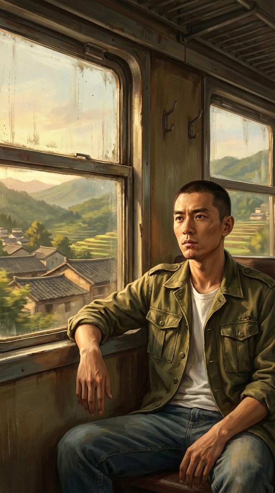
场景：绿皮火车车厢
远景/窗外
退役令下达的第七天，秦风终于坐上了回乡的火车。
窗外是他阔别八年的家乡风景——成片的稻田、低矮的房屋、蜿蜒的小河。一切都没变，又好像什么都变了。
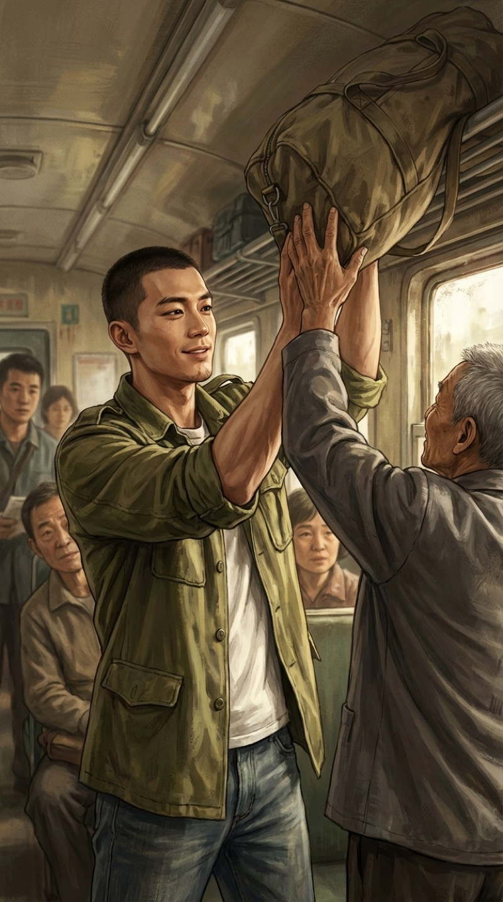
场景：火车车厢内
中景
过道里，一个老大爷正费力地把蛇皮袋往行李架上塞。秦风起身，单手就把几十斤重的袋子稳稳托了上去。
老大爷："小伙子，当过兵吧？这力气，一看就练过。"
秦风淡淡一笑，没说话。有些东西，刻进骨头里了。
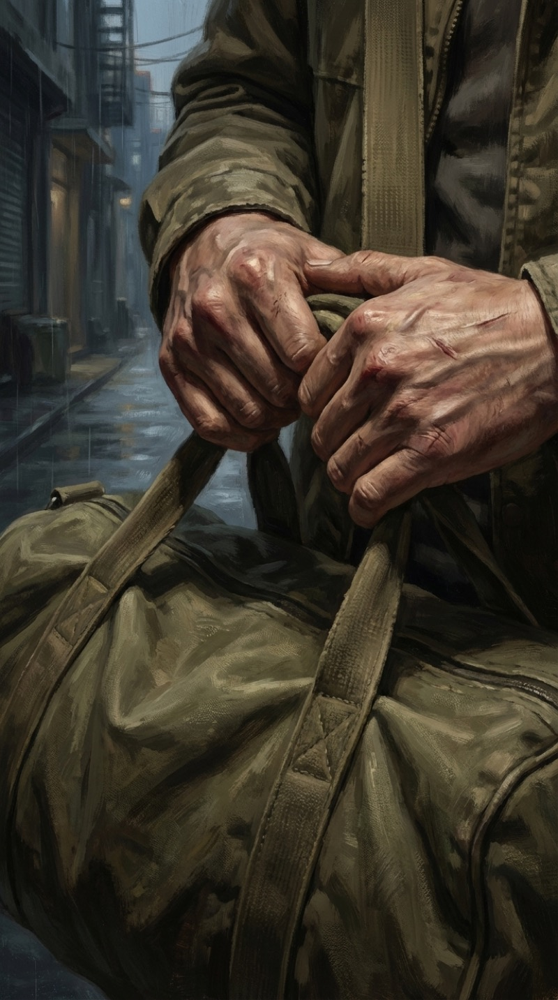
特写
那双手说明了一切——老茧层叠，指关节上有细小的疤痕，每一道都是实战留下的勋章。
他抓起军绿色的行李袋，准备下车。
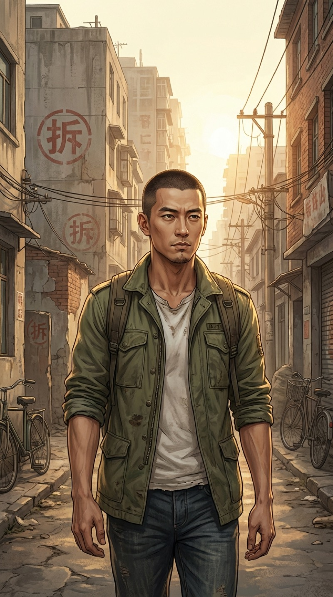
场景：城西老街
远景
切：火车→街道
城西老街。秦风记忆中热闹的街道，如今萧条了一半。好几家店铺门板紧闭，墙上喷着大红的"拆"字。
（秦风内心：八年没回来……变成这样了？）
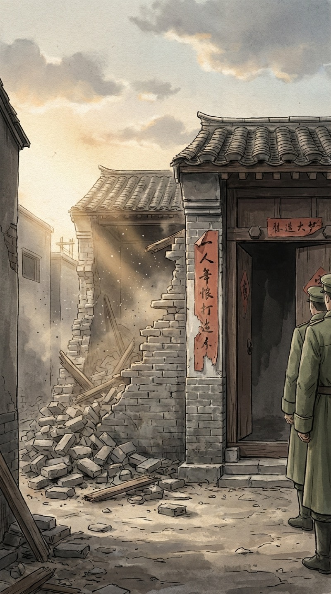
场景：秦家老宅
中景
秦家老宅。半面墙被砸塌了，砖头碎了一地。门框上贴着的春联还在，只剩半边——
"家和万事兴"，"家"字还在，"兴"字已经碎了。
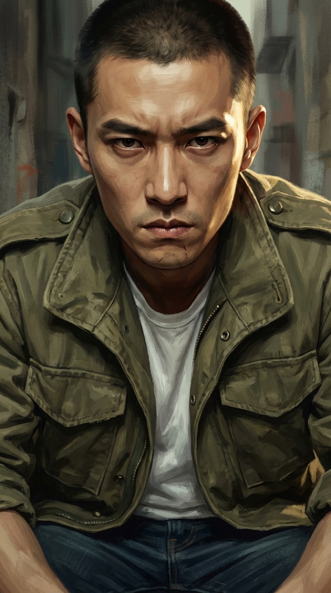
特写/面部
——咯嚓。
秦风的拳头攥紧了。下巴上的疤痕微微跳动。
（这双眼睛，在战场上看过生死，此刻燃起的不是恐惧，而是寒意。）
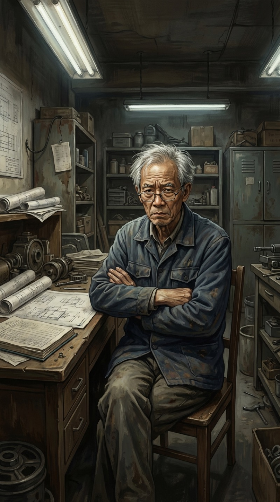
场景：秦国强的小工厂/办公室
中景
切：老宅→工厂
父亲秦国强没住在家里——他住在自己的小工厂。六十岁的老工程师，头发白了一半，眼镜腿用胶带缠着，但腰板依然挺得笔直。
秦国强："我这辈子就这一个厂子，谁来了我也不签字。"
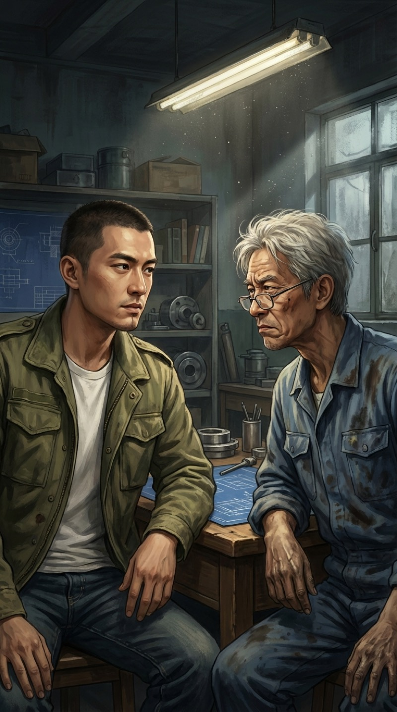
双人近景
秦风："爸，墙是谁砸的？"
秦国强："鼎盛集团的人。要拆整条街建商业广场。街坊们一个个都签了，就剩我了。"
秦风："报警了吗？"
秦国强（冷笑）："报了。警察来了，看了看，说'协调协调'，然后就没然后了。"
· · ·
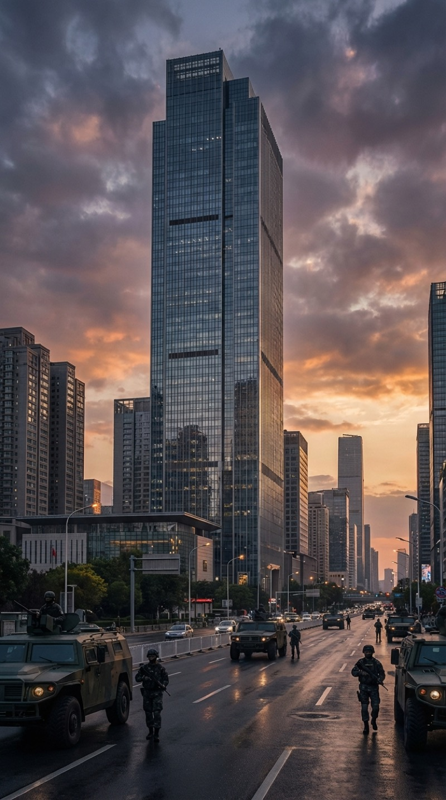
场景：城市CBD / 鼎盛集团总部
远景/建立
切：工厂→城市
鼎盛集团。这座城市最大的地产商，据说背景深不可测。
玻璃幕墙的大楼在夕阳下闪着冷光，像一把插在老城区心脏上的刀。
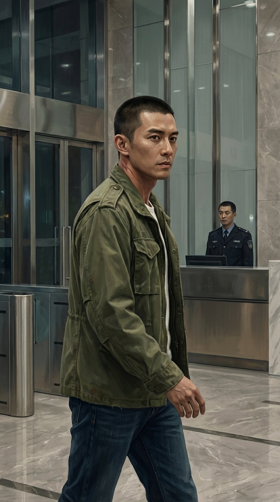
场景：鼎盛集团大堂
中景/背影
秦风第二天直接去了鼎盛集团。穿着那件洗得发白的旧军用夹克，推门走进大理石铺地的豪华大堂。
保安打量着他，像在看一只误入宫殿的野猫。
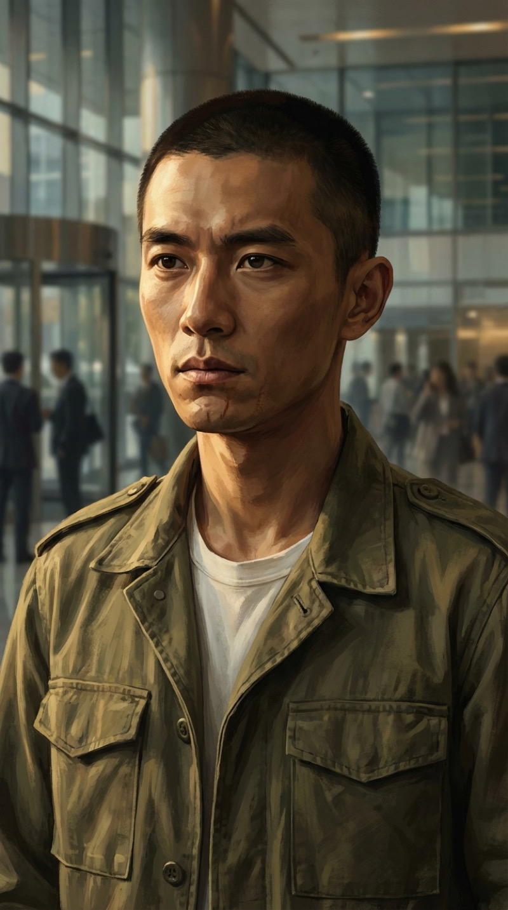
特写/眼部
三秒。
秦风的眼睛已经完成了对整栋楼的初步侦察——三个出口，两部电梯，监控盲区在东北角走廊。
（职业病。在任何空间里，他第一件事永远是找退路。）
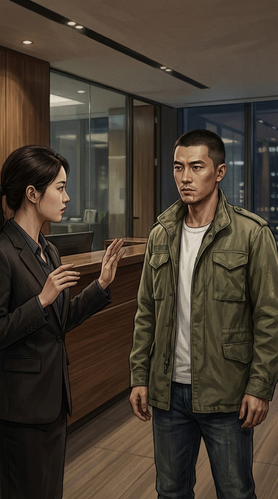
中景
前台小姐："先生，请问您有预约吗？没有预约不能上楼。"
秦风："我找你们负责城西拆迁项目的人。"
前台小姐："请先预约——"
秦风点了点头，转身就走。但他走的不是正门。
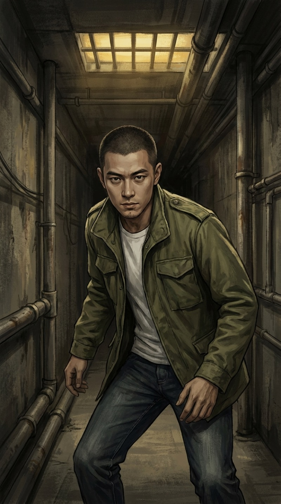
场景：大楼后勤通道
低角度中景
后勤通道。管道密布，灯光昏暗。
秦风的脚步几乎没有发出声音——这是渗透作战训练留下的肌肉记忆。在这种环境里，他比任何人都自在。
（可惜，还没见到正主，电话就来了——）
· · ·
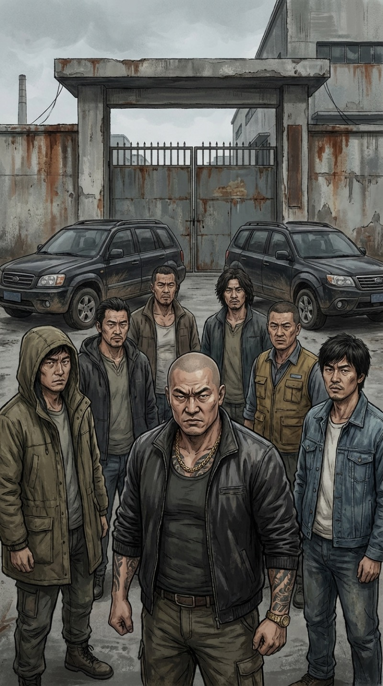
场景：工厂大门
全景
切：大楼→工厂
秦风赶回工厂的时候，已经晚了一步。
三辆黑色SUV堵在工厂门口。十几个人下了车，为首的——光头，粗金链子，花臂纹身，嘴里叼着牙签。
人称"金链子哥"。鼎盛集团的外包打手头目。
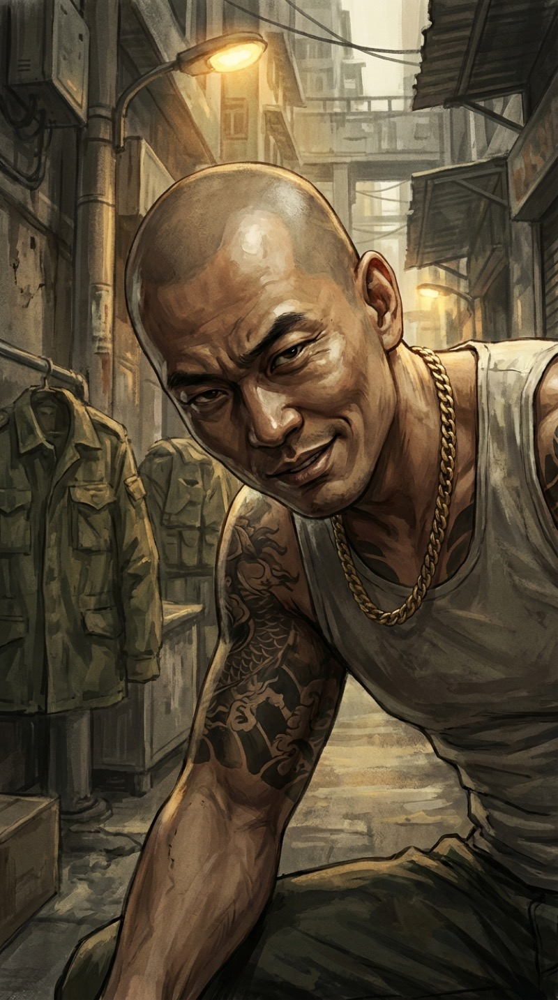
低角度特写
金链子哥："老秦啊，最后一次机会。签不签？"
秦国强（从工厂里喊）："滚！"
金链子哥（笑）："有脾气。来，给老爷子上上课——"
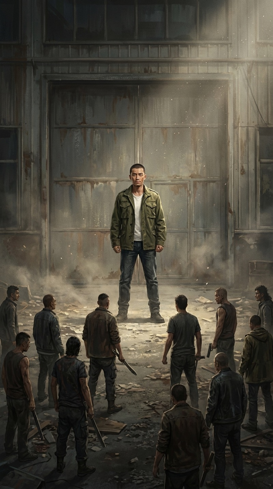
全景/对峙
——踏。
秦风站在工厂门口。一个人。面对十二个。
秦风："谁动我爸，我打断他的腿。"
声音不大，但每个字都像钉子一样钉进空气里。
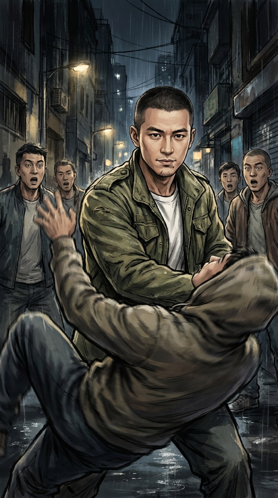
动态特写
砰——啪——咔嚓。
第一个冲上来的，被秦风一个擒拿摔在地上。手臂反关节锁死，干净利落，标准的特种兵近身格斗。
秦风（低声）："下一个。"
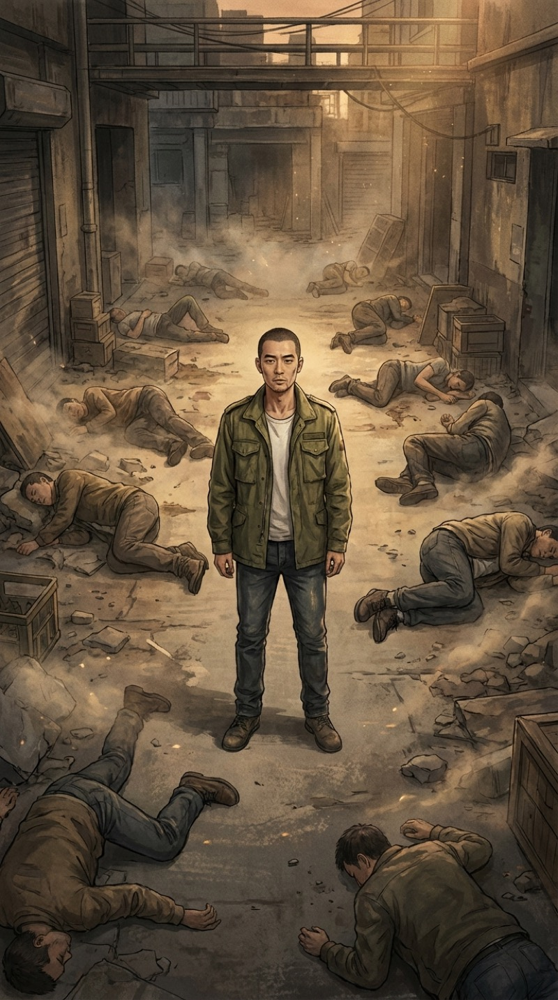
俯拍全景
四十五秒。
十二个人，全部倒地。有的捂着胳膊，有的抱着膝盖，有的直接晕了过去。
秦风站在中间，夹克上连个褶皱都没多。表情——
就像刚做完一组俯卧撑那么平静。
金链子哥（瘫在地上）："你……你他妈是谁……"
秦风："秦风。秦国强的儿子。记住了。"
· · ·
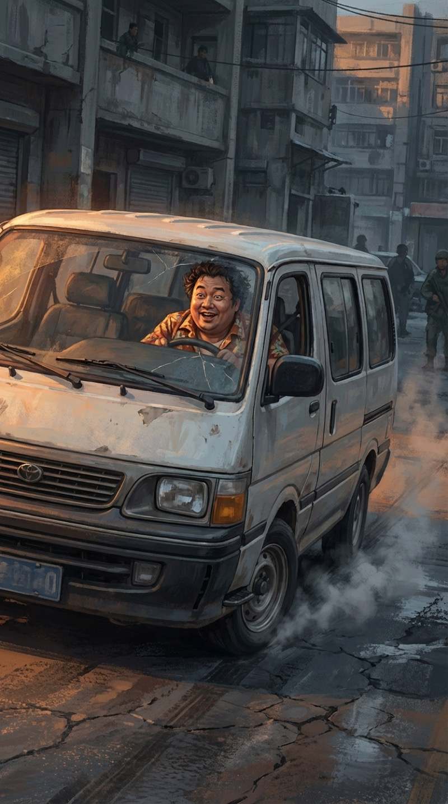
场景：工厂门外街道
中景
——滋溜——
一辆破得不能再破的白色面包车歪歪扭扭地刹停在工厂门口，车里传出震天响的DJ舞曲。
（秦风：……来了。）
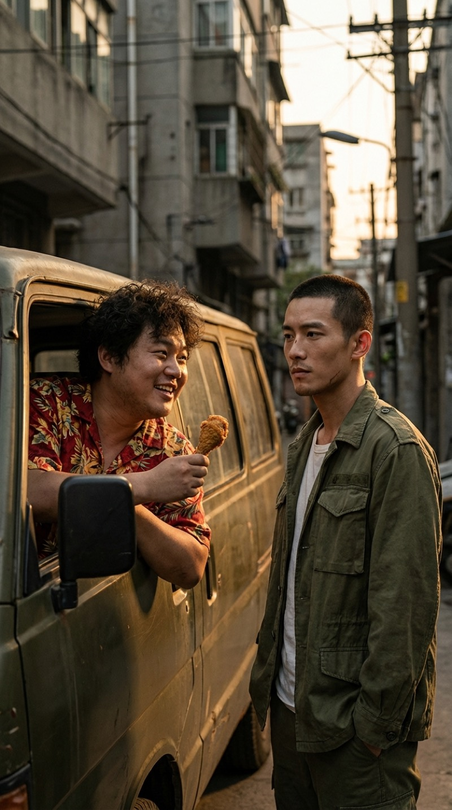
双人近景
刘大嘴（嘴里叼着鸡腿，从车窗探出头）："哟，老秦！听说你退役了？我一接到消息立马——嚼嚼——赶过来了！"
秦风："你开了六百公里就为了送一只鸡腿？"
刘大嘴："不是，我带了一整只鸡。鸡腿是路上先犒劳自己的。"
刘大嘴，外号"情报处长"。秦风的老战友。话痨、八卦、贪吃，但关键时刻……偶尔靠谱。
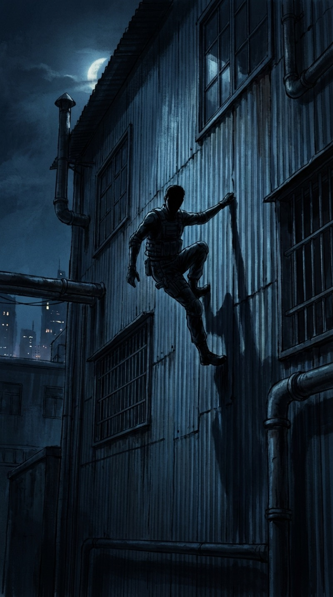
场景：鼎盛集团郊区仓库
夜景剪影
切：夜间行动
当晚。秦风决定主动出击。
光靠打架解决不了问题。鼎盛集团背后一定有更深的东西。刘大嘴通过"老战友网络"打听到：鼎盛在郊区有个仓库，进出频繁但不对外。
翻墙，对秦风来说比走楼梯还简单。
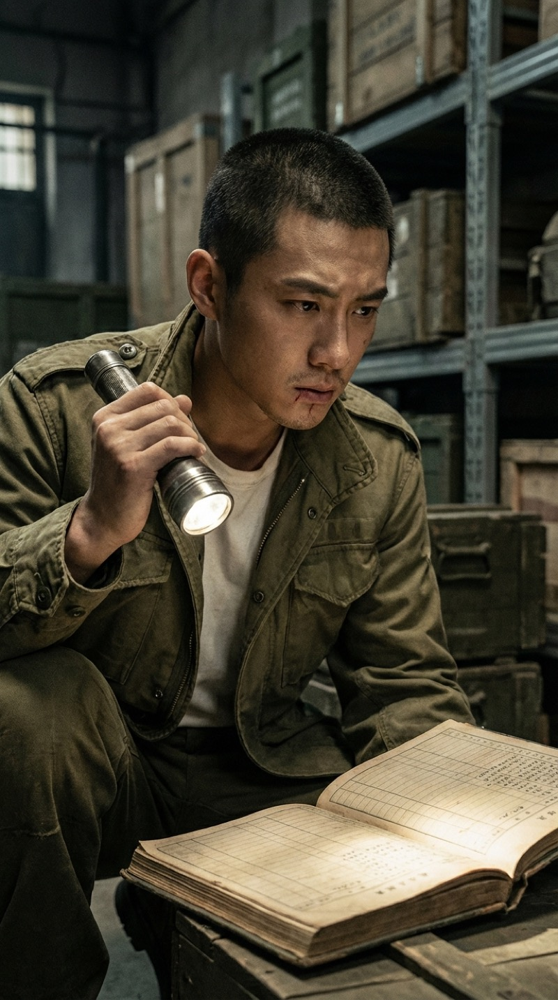
特写/手电光
手电光扫过一排铁柜。打开——
两套账本。一套是正常的工程款，另一套……
（秦风内心：资金流向对不上。大量现金进出，走的是空壳公司。这不是普通的拆迁，是洗钱。）
他快速用手机拍下关键页面。
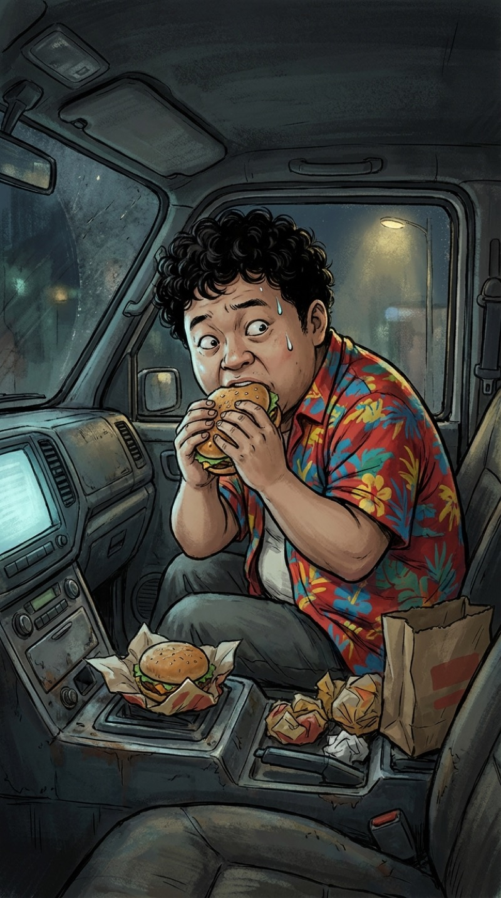
场景：仓库外停车场/面包车内
中景/车内
与此同时，负责放风的刘大嘴——
刘大嘴（嘴里塞满汉堡，满头大汗）："老秦你快点啊……我已经吃了三个汉堡了……再紧张下去我得去买第四个……"
刘大嘴（对讲机）："报告！目标区域东侧有车灯！不对，是路灯。虚惊一场。我再吃一口。"
场景：工厂天台
背影中景
行动结束。回到工厂天台。
夜风吹动秦风的旧军用夹克。城市的灯火在脚下铺开，鼎盛集团的大楼在远处亮着冷白色的光。
秦风（轻声）："这场仗……比战场上的复杂多了。"
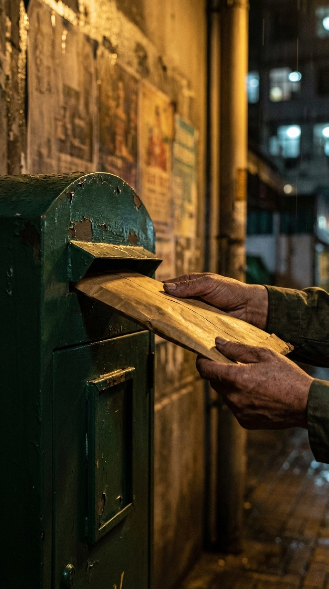
特写/手部
第二天一早。秦风把整理好的证据复印件装进牛皮纸信封，投进了街角的邮筒。
（寄往省纪委。打蛇打七寸，这是战术基本功。）
刘大嘴（从面包车里探头）："那你的意思是……要打持久战？"
秦风："嗯。"
刘大嘴："行吧。那我先去批发点泡面，顺便再买两箱鸡腿。"
— 第一章 · 完 —
「有些人退役了，但战斗从未停止。」
鼎盛集团的幕后黑手是谁？
秦风的证据能否撼动这棵大树？
金链子哥会不会带人报复？
刘大嘴的泡面够不够吃？
▶ 第二章「暗流涌动」· 敬请期待